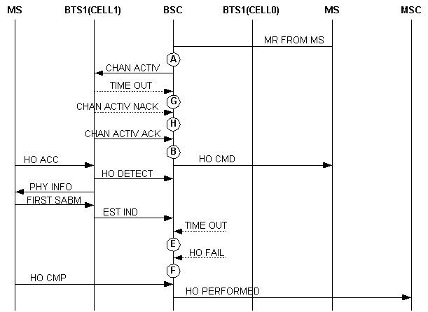

Measurement Counters
| ID | Counter | Description |
|---|---|---|
| 1278079449 | CELL.INTRABSC.OUTCELL.HO.FAIL.SD.NOT.INCLUDE.DR.900.900 | H3120W:Number of Unsuccessful Outgoing Internal Inter-Cell Handovers (SDCCH) (Excluding Directed Retry) (900/850/810-900/850/810) |
| 1278079450 | CELL.INTRABSC.OUTCELL.HO.FAIL.SD.NOT.INCLUDE.DR.1800.1800 | H3120X:Number of Unsuccessful Outgoing Internal Inter-Cell Handovers (SDCCH) (Excluding Directed Retry) (1800/1900-1800/1900) |
| 1278079451 | CELL.INTRABSC.OUTCELL.HO.FAIL.SD.NOT.INCLUDE.DR.900.1800 | H3120Y:Number of Unsuccessful Outgoing Internal Inter-Cell Handovers (SDCCH) (Excluding Directed Retry) (900/850/810-1800/1900) |
| 1278079452 | CELL.INTRABSC.OUTCELL.HO.FAIL.SD.NOT.INCLUDE.DR.1800.900 | H3120Z:Number of Unsuccessful Outgoing Internal Inter-Cell Handovers (SDCCH) (Excluding Directed Retry) (1800/1900-900/850/810) |
| 1278079453 | CELL.INTRABSC.OUTCELL.HO.FAIL.TCHF.NOT.INCLUDE.DR.900.900 | H3127W:Number of Unsuccessful Outgoing Internal Inter-Cell Handovers (TCHF) (Excluding Directed Retry) (900/850/810-900/850/810) |
| 1278079454 | CELL.INTRABSC.OUTCELL.HO.FAIL.TCHF.NOT.INCLUDE.DR.1800.1800 | H3127X:Number of Unsuccessful Outgoing Internal Inter-Cell Handovers (TCHF) (Excluding Directed Retry) (1800/1900-1800/1900) |
| 1278079455 | CELL.INTRABSC.OUTCELL.HO.FAIL.TCHF.NOT.INCLUDE.DR.900.1800 | H3127Y:Number of Unsuccessful Outgoing Internal Inter-Cell Handovers (TCHF) (Excluding Directed Retry) (900/850/810-1800/1900) |
| 1278079456 | CELL.INTRABSC.OUTCELL.HO.FAIL.TCHF.NOT.INCLUDE.DR.1800.900 | H3127Z:Number of Unsuccessful Outgoing Internal Inter-Cell Handovers (TCHF) (Excluding Directed Retry) (1800/1900-900/850/810) |
| 1278079457 | CELL.INTRABSC.OUTCELL.HO.FAIL.TCHH.NOT.INCLUDE.DR.900.900 | H3128W:Number of Unsuccessful Outgoing Internal Inter-Cell Handovers (TCHH) (Excluding Directed Retry) (900/850/810-900/850/810) |
| 1278079458 | CELL.INTRABSC.OUTCELL.HO.FAIL.TCHH.NOT.INCLUDE.DR.1800.1800 | H3128X:Number of Unsuccessful Outgoing Internal Inter-Cell Handovers (TCHH) (Excluding Directed Retry) (1800/1900-1800/1900) |
| 1278079459 | CELL.INTRABSC.OUTCELL.HO.FAIL.TCHH.NOT.INCLUDE.DR.900.1800 | H3128Y:Number of Unsuccessful Outgoing Internal Inter-Cell Handovers (TCHH) (Excluding Directed Retry) (900/850/810-1800/1900) |
| 1278079460 | CELL.INTRABSC.OUTCELL.HO.FAIL.TCHH.NOT.INCLUDE.DR.1800.900 | H3128Z:Number of Unsuccessful Outgoing Internal Inter-Cell Handovers (TCHH) (Excluding Directed Retry) (1800/1900-900/850/810) |
| 1278079461 | CELL.INTRABSC.OUTCELL.HO.FAIL.DR.900.900 | H3121W:Number of Unsuccessful Outgoing Internal Inter-Cell Handovers (Directed Retry) (900/850/810-900/850/810) |
| 1278079462 | CELL.INTRABSC.OUTCELL.HO.FAIL.DR.1800.1800 | H3121X:Number of Unsuccessful Outgoing Internal Inter-Cell Handovers (Directed Retry) (1800/1900-1800/1900) |
| 1278079463 | CELL.INTRABSC.OUTCELL.HO.FAIL.DR.900.1800 | H3121Y:Number of Unsuccessful Outgoing Internal Inter-Cell Handovers (Directed Retry) (900/850/810-1800/1900) |
| 1278079464 | CELL.INTRABSC.OUTCELL.HO.FAIL.DR.1800.900 | H3121Z:Number of Unsuccessful Outgoing Internal Inter-Cell Handovers (Directed Retry) (1800/1900-900/850/810) |
| 1278079465 | CELL.INTRABSC.OUTCELL.HO.FAIL.CONG | H312A:Number of Failed Outgoing Internal Inter-Cell Handovers (No Channel Available) |
| 1278079466 | CELL.INTRABSC.OUTCELL.HO.FAIL.APPLY.TRSL.FAIL | H312B:Number of Failed Outgoing Internal Inter-Cell Handovers (Terrestrial Resource Request Failed) |
| 1278079467 | CELL.INTRABSC.OUTCELL.HO.FAIL.A.INTERF.FAIL | H312G:Number of Failed Outgoing Internal Inter-Cell Handovers (A Interface Failure) |
| 1278079468 | CELL.INTRABSC.OUTCELL.HO.FAIL.EXP.SD.NOT.INCLUDE.DR | H3120C:Number of Unsuccessful Outgoing Internal Inter-Cell Handovers (Timer Expired) (SDCCH) (Excluding Directed Retry) |
| 1278079469 | CELL.INTRABSC.OUTCELL.HO.FAIL.EXP.TCHF.SIG.NOT.INCLUDE.DR | H3127Cb:Number of Unsuccessful Outgoing Internal Inter-Cell Handovers (Timer Expired) (TCHF) (Signaling Channel) |
| 1278079470 | CELL.INTRABSC.OUTCELL.HO.FAIL.EXP.TCHH.SIG.NOT.INCLUDE.DR | H3128Cb:Number of Unsuccessful Outgoing Internal Inter-Cell Handovers (Timer Expired) (TCHH) (Signaling Channel) |
| 1278079471 | CELL.INTRABSC.OUTCELL.HO.FAIL.EXP.TCHF.TRAF.NOT.INCLUDE.DR | H3127Ca:Number of Unsuccessful Outgoing Internal Inter-Cell Handovers (Timer Expired) (TCHF) (Traffic Channel) |
| 1278079472 | CELL.INTRABSC.OUTCELL.HO.FAIL.EXP.TCHH.TRAF.NOT.INCLUDE.DR | H3128Ca:Number of Unsuccessful Outgoing Internal Inter-Cell Handovers (Timer Expired) (TCHH) (Traffic Channel) |
| 1278079473 | CELL.INTRABSC.OUTCELL.HO.FAIL.EXP.DR | H3121C:Number of Unsuccessful Outgoing Internal Inter-Cell Handovers (Timer Expired) (Directed Retry) |
| 1278079474 | CELL.INTRABSC.OUTCELL.HO.FAIL.RECONN.SUCC.MS.RPT.ABNORM.REL.UNS | H312Da:Number of Failed Outgoing Internal Inter-Cell Handovers (Reconnection to Old Channels) (Abnormal Release, Unspecified) |
| 1278079475 | CELL.INTRABSC.OUTCELL.HO.FAIL.RECONN.SUCC.MS.RPT.ABNORM.REL.CHN | H312Db:Number of Failed Outgoing Internal Inter-Cell Handovers (Reconnection to Old Channels) (Abnormal Release, Channel Unacceptable) |
| 1278079476 | CELL.INTRABSC.OUTCELL.HO.FAIL.RECONN.SUCC.MS.RPT.ABNORM.REL.EXP | H312Dc:Number of Failed Outgoing Internal Inter-Cell Handovers (Reconnection to Old Channels) (Abnormal Release, Timer Expired) |
| 1278079477 | CELL.INTRABSC.OUTCELL.HO.FAIL.RECONN.SUCC.MS.RPT.ABN.REL.NO.ACT | H312Dd:Number of Failed Outgoing Internal Inter-Cell Handovers (Reconnection to Old Channels) (Abnormal Release, No Activity on the Radio Path) |
| 1278079478 | CELL.INTRABSC.OUTCELL.HO.FAIL.RECONN.SUCC.MS.RPT.PREEMPT | H312De:Number of Failed Outgoing Internal Inter-Cell Handovers (Reconnection to Old Channels) (Preemptive Release) |
| 1278079479 | CELL.INTRABSC.OUTCELL.HO.FAIL.RECONN.SUCC.MS.RPT.HO.TA | H312Df:Number of Failed Outgoing Internal Inter-Cell Handovers (Reconnection to Old Channels) (Handover Failed, Timing Advance out of Range) |
| 1278079480 | CELL.INTRABSC.OUTCELL.HO.FAIL.RECONN.SUCC.MS.RPT.CH.MODE | H312Dg:Number of Failed Outgoing Internal Inter-Cell Handovers (Reconnection to Old Channels) (Channel Mode Unavailable) |
| 1278079481 | CELL.INTRABSC.OUTCELL.HO.FAIL.RECONN.SUCC.MS.RPT.FREQ | H312Dh:Number of Failed Outgoing Internal Inter-Cell Handovers (Reconnection to Old Channels) (Frequency Unavailable) |
| 1278079482 | CELL.INTRABSC.OUTCELL.HO.FAIL.RECONN.SUCC.MS.RPT.C.CLR | H312Di:Number of Failed Outgoing Internal Inter-Cell Handovers (Reconnection to Old Channels) (Call Already Cleared) |
| 1278079483 | CELL.INTRABSC.OUTCELL.HO.FAIL.RECONN.SUCC.MS.RPT.SEMANT | H312Dj:Number of Failed Outgoing Internal Inter-Cell Handovers (Reconnection to Old Channels) (Semantically Incorrect Message) |
| 1278079484 | CELL.INTRABSC.OUTCELL.HO.FAIL.RECONN.SUCC.MS.RPT.INV.MAN | H312Dk:Number of Failed Outgoing Internal Inter-Cell Handovers (Reconnection to Old Channels) (Invalid Mandatory Information) |
| 1278079485 | CELL.INTRABSC.OUTCELL.HO.FAIL.RECONN.SUCC.MS.RPT.M.T.NE | H312Dl:Number of Failed Outgoing Internal Inter-Cell Handovers (Reconnection to Old Channels) (Message Type Non-Existent or Not Implemented) |
| 1278079486 | CELL.INTRABSC.OUTCELL.HO.FAIL.RECONN.SUCC.MS.RPT.M.T.NC | H312Dm:Number of Failed Outgoing Internal Inter-Cell Handovers (Reconnection to Old Channels) (Message Type Not Compatible with Protocol State) |
| 1278079487 | CELL.INTRABSC.OUTCELL.HO.FAIL.RECONN.SUCC.MS.RPT.CONDIT | H312Dn:Number of Failed Outgoing Internal Inter-Cell Handovers (Reconnection to Old Channels) (Conditional IE Error) |
| 1278079488 | CELL.INTRABSC.OUTCELL.HO.FAIL.RECONN.SUCC.MS.RPT.NO.CA | H312Do:Number of Failed Outgoing Internal Inter-Cell Handovers (Reconnection to Old Channels) (No Cell Allocation Available) |
| 1278079489 | CELL.INTRABSC.OUTCELL.HO.FAIL.RECONN.SUCC.MS.RPT.PROTOCL | H312Dp:Number of Failed Outgoing Internal Inter-Cell Handovers (Reconnection to Old Channels) (Protocol Error Unspecified) |
| 1278079490 | CELL.INTRABSC.OUTCELL.HO.FAIL.RECONN.SUCC.MS.RPT.OTHER | H312Dq:Number of Failed Outgoing Internal Inter-Cell Handovers (Reconnection to Old Channels) (Other Causes) |
| 1278079515 | CELL.INTRABSC.OUTCELL.HO.FAIL.UL.QLTY | H3122A:Number of Unsuccessful Outgoing Internal Inter-Cell Handovers (Uplink Quality) |
| 1278079516 | CELL.INTRABSC.OUTCELL.HO.FAIL.DL.QLTY | H3122B:Number of Unsuccessful Outgoing Internal Inter-Cell Handovers (Downlink Quality) |
| 1278079517 | CELL.INTRABSC.OUTCELL.HO.FAIL.UL.RXL | H3122C:Number of Unsuccessful Outgoing Internal Inter-Cell Handovers (Uplink Strength) |
| 1278079518 | CELL.INTRABSC.OUTCELL.HO.FAIL.DL.RXL | H3122D:Number of Unsuccessful Outgoing Internal Inter-Cell Handovers (Downlink Strength) |
| 1278079519 | CELL.INTRABSC.OUTCELL.HO.FAIL.TA | H3122E:Number of Unsuccessful Outgoing Internal Inter-Cell Handovers (Timing Advance) |
| 1278079520 | CELL.INTRABSC.OUTCELL.HO.FAIL.BETTER.CELL | H3122F:Number of Unsuccessful Outgoing Internal Inter-Cell Handovers (Better Cell) |
| 1278079521 | CELL.INTRABSC.OUTCELL.HO.FAIL.LOAD | H3122G:Number of Failed Outgoing Internal Inter-Cell Handovers (Load) |
| 1278079522 | CELL.INTRABSC.OUTCELL.HO.FAIL.RAPID.LEV.DROP | H3122H:Number of Unsuccessful Outgoing Internal Inter-Cell Handovers (Rapid Level Drop) |
| 1278079523 | CELL.INTRABSC.OUTCELL.HO.FAIL.MSC.INTERVENTION | H3122I:Number of Unsuccessful Outgoing Internal Inter-Cell Handovers (MSC Intervention) |
| 1278079524 | CELL.INTRABSC.OUTCELL.HO.FAIL.OM.INTERVENTION | H3122J:Number of Unsuccessful Outgoing Internal Inter-Cell Handovers (OM Intervention) |
| 1278079526 | CELL.INTRABSC.OUTCELL.HO.FAIL.OTHER | H3122L:Number of Unsuccessful Outgoing Internal Inter-Cell Handovers (Other Causes) |
| 1278079538 | CELL.INTRABSC.OUTCELL.HO.FAIL.BSC.LOOP | H312Aa:Number of Unsuccessful Outgoing Internal Inter-Cell Handovers During BSC Local Switch |
| 1278079539 | CELL.INTRABSC.OUTCELL.HO.FAIL.BTS.LOOP | H312Ab:Number of Unsuccessful Outgoing Internal Inter-Cell Handovers During BTS Local Switch |
| 1278079544 | CELL.INTRABSC.OUTCELL.HO.FAIL.NO.IDLE.ABIS | H312L:Number of Intra-BSC Outgoing Cell Handover Failures Due to No Abis Resources Available |
| 1278079551 | CELL.INTRABSC.OUTCELL.HO.FAIL.DUBAND.OUTTER.INNER | H312M:Number of Unsuccessful Outgoing Internal Inter-Cell Handovers (Underlaid to Overlaid Subcell in Enhanced Dualband Network) |
| 1278079552 | CELL.INTRABSC.OUTCELL.HO.FAIL.DUBAND.INNER.OUTTER | H312N:Number of Unsuccessful Outgoing Internal Inter-Cell Handovers (Overlaid to Underlaid Subcell Handover in Enhanced Dualband Network) |
| 1278079553 | CELL.INTRABSC.OUTCELL.HO.FAIL.DUBAND.INNER.USER.MOVE | H312O:Number of Unsuccessful Outgoing Internal Inter-Cell Handovers (MS Handover in the Overlaid Subcell Covered by the Enhanced Dualband Network) |
| 1278079554 | CELL.INTRABSC.OUTCELL.HO.FAIL.NO.SPEECH.VER | H312H:Number of Unsuccessful Outgoing Internal Inter-Cell Handovers (Requested Speech Version Unavailable) |
| 1278079555 | CELL.INTRABSC.OUTCELL.HO.FAIL.CHACT.FAIL | H312I:Number of Unsuccessful Outgoing Internal Inter-Cell Handovers (Channel Activation Failed) |
Description
During the outgoing internal inter-cell handover procedure, if the handover fails because of various causes before the BSC receives HO CMP message from the MS, the specific counter is measured based on the target channel types, handover failure causes, handover causes. Together with Outgoing Internal Inter-Cell Handover Requests and Outgoing Internal Inter-Cell Handover Commands, this counter indicates the performance of outgoing internal inter-cell handovers. Together with the counters related to the incoming internal inter-Cell handovers, this counter indicates the performance of internal inter-cell handovers.
The following counters provide the numbers of failed outgoing internal inter-cell handovers initiated by the BSC based on the handover algorithm (excluding directed retry) when the handover occurs between the frequency bands as listed in. The target channel for handover can be SDCCH, TCHF, or TCHH. These counters are measured based on the frequency bands on which the handover occurs and are measured when the outgoing intra-BSC inter-cell handover is terminated. They are measured when the outgoing internal inter-cell handover is terminated.
- H3120W:CELL.INTRABSC.OUTCELL.HO.FAIL.SD.NOT.INCLUDE.DR.900.900
- H3120X:CELL.INTRABSC.OUTCELL.HO.FAIL.SD.NOT.INCLUDE.DR.1800.1800
- H3120Y:CELL.INTRABSC.OUTCELL.HO.FAIL.SD.NOT.INCLUDE.DR.900.1800
- H3120Z:CELL.INTRABSC.OUTCELL.HO.FAIL.SD.NOT.INCLUDE.DR.1800.900
- H3127W:CELL.INTRABSC.OUTCELL.HO.FAIL.TCHF.NOT.INCLUDE.DR.900.900
- H3127X:CELL.INTRABSC.OUTCELL.HO.FAIL.TCHF.NOT.INCLUDE.DR.1800.1800
- H3127Y:CELL.INTRABSC.OUTCELL.HO.FAIL.TCHF.NOT.INCLUDE.DR.900.1800
- H3127Z:CELL.INTRABSC.OUTCELL.HO.FAIL.TCHF.NOT.INCLUDE.DR.1800.900
- H3128W:CELL.INTRABSC.OUTCELL.HO.FAIL.TCHH.NOT.INCLUDE.DR.900.900
- H3128X:CELL.INTRABSC.OUTCELL.HO.FAIL.TCHH.NOT.INCLUDE.DR.1800.1800
- H3128Y:CELL.INTRABSC.OUTCELL.HO.FAIL.TCHH.NOT.INCLUDE.DR.900.1800
- H3128Z:CELL.INTRABSC.OUTCELL.HO.FAIL.TCHH.NOT.INCLUDE.DR.1800.900
- H3121W:CELL.INTRABSC.OUTCELL.HO.FAIL.DR.900.900
- H3121X:CELL.INTRABSC.OUTCELL.HO.FAIL.DR.1800.1800
- H3121Y:CELL.INTRABSC.OUTCELL.HO.FAIL.DR.900.1800
- H3121Z:CELL.INTRABSC.OUTCELL.HO.FAIL.DR.1800.900
- H3122A:CELL.INTRABSC.OUTCELL.HO.FAIL.UL.QLTY
- H3122B:CELL.INTRABSC.OUTCELL.HO.FAIL.DL.QLTY
- H3122C:CELL.INTRABSC.OUTCELL.HO.FAIL.UL.RXL
- H3122D:CELL.INTRABSC.OUTCELL.HO.FAIL.DL.RXL
The following counters provide the numbers of failed outgoing internal inter-cell handovers initiated by the BSC using TA handover algorithm based on the TA value in the measurement report. They are measured when the BSC terminates the outgoing internal inter-cell handover.
- H3122E:CELL.INTRABSC.OUTCELL.HO.FAIL.TA
The following counter provides the number of failed outgoing internal inter-cell handovers initiated by the BSC based on the measurement reports using algorithms such as power budget handover (PBGT), inter-layer handover (better cell), and better 3G cell handover. It is measured when the BSC terminates the outgoing internal inter-cell handover.
- H3122F:CELL.INTRABSC.OUTCELL.HO.FAIL.BETTER.CELL
The following counter provides the numbers of failed outgoing internal inter-cell handovers initiated by the BSC using load handover algorithm based on the current load conditions in the serving cell. It is measured when the BSC terminates the outgoing internal inter-cell handover.
- H3122G :CELL.INTRABSC.OUTCELL.HO.FAIL.LOAD
The following counters provide the numbers of failed outgoing internal inter-cell handovers initiated by the BSC using the rapid level drop algorithm based on the measurement reports. It is measured when the BSC terminates the outgoing internal inter-cell handover.
- H3122H:CELL.INTRABSC.OUTCELL.HO.FAIL.RAPID.LEV.DROP
If the enhanced dual-band network is enabled, the following counters provide the numbers of failed outgoing internal inter-cell handovers based on the algorithms for enhanced dual-band network handover and the measurement report. They are measured when the outgoing internal inter-cell handover is terminated.
The following counter provides the number of failed outgoing internal inter-cell handovers due to high load in the underlaid subcell. It is measured when the outgoing internal inter-cell handover is terminated.
- H311M:CELL.INTRABSC.OUTCELL.HO.FAIL.DUBAND.OUTTER.INNER
- H311N:CELL.INTRABSC.OUTCELL.HO. FAIL .DUBAND.INNER.OUTTER
- H311O:CELL.INTRABSC.OUTCELL.HO. FAIL .DUBAND.INNER.USER.MOVE
- H3122I:CELL.INTRABSC.OUTCELL.HO.FAIL.MSC.INTERVENTION
The following counter provides the number of failed outgoing internal inter-cell handovers initiated manually by the maintenance personnel from the maintenance terminal. It is measured when the outgoing internal inter-cell handover is terminated.
- H3122J:CELL.INTRABSC.OUTCELL.HO.FAIL.OM.INTERVENTION
- H312Aa:CELL.INTRABSC.OUTCELL.HO.FAIL.BSC.LOOP
- H312Ab:CELL.INTRABSC.OUTCELL.HO.FAIL.BTS.LOOP
- H3122L:CELL.INTRABSC.OUTCELL.HO.FAIL.OTHER
1) Causes related to resource allocation:
No traffic channel is available.
No speech version is available.
No Abis resource is available.
The BSC fails to obtain the terrestrial resources.
(2) Causes related to access on the Um interface
The MS fails to access the new channel and then reconnects to the old channel.
The timer for the BSC to wait for an HO CMP message expires.
3) Abnormal causes
The BSC fails to activate the allocated channel.
A fault occurs on the A interface.
1) The following counters are measured when the outgoing internal inter-cell handover fails because of failed allocation of relevant resources.
If outgoing internal inter-cell handover fails because no channel is available in the target cell, the following counter is measured:
- H312A:CELL.INTRABSC.OUTCELL.HO.FAIL.CONG
- H312H:CELL.INTRABSC.OUTCELL.HO.FAIL.NO.SPEECH.VER
- H312L: CELL.INTRABSC.OUTCELL.HO.FAIL.NO.IDLE.ABIS
- H312B:CELL.INTRABSC.OUTCELL.HO.FAIL.APPLY.TRSL.FAIL
During the handover procedure excluding directed retry, after the BSC successfully allocates and activates the channel in the target cell, it sends an HO CMD message to the MS and starts the timer T3103 to wait for the HO CMP message. If no HO CMP is received by the BSC before T3103 expires, the BSC releases the call. Then, the specific counter is measured in the originating cell based on the originating channel, that is, signaling channel (SDCCH/TCHF/TCCH) or traffic channel (TCHF/TCHH).
- H3120C:CELL.INTRABSC.OUTCELL.HO.FAIL.EXP.SD.NOT.INCLUDE.DR
- H3127Cb:CELL.INTRABSC.OUTCELL.HO.FAIL.EXP.TCHF.SIG.NOT.INCLUDE.DR
- H3128Cb:CELL.INTRABSC.OUTCELL.HO.FAIL.EXP.TCHH.SIG.NOT.INCLUDE.DR
- H3127Ca:CELL.INTRABSC.OUTCELL.HO.FAIL.EXP.TCHF.TRAF.NOT.INCLUDE.DR
- H3128Ca:CELL.INTRABSC.OUTCELL.HO.FAIL.EXP.TCHH.TRAF.NOT.INCLUDE.DR
- H3121C:CELL.INTRABSC.OUTCELL.HO.FAIL.EXP.DR
- H312Da:CELL.INTRABSC.OUTCELL.HO.FAIL.RECONN.SUCC.MS.RPT.ABNORM.REL.UNS is measured when the cause value carried in the HO FAIL message is Abnormal Release, Unspecified.
- H312Db:CELL.INTRABSC.OUTCELL.HO.FAIL.RECONN.SUCC.MS.RPT.ABNORM.REL.CHN is measured when the cause value carried in the HO FAIL message is Abnormal Release, Channel Unacceptable.
- H312Dc:CELL.INTRABSC.OUTCELL.HO.FAIL.RECONN.SUCC.MS.RPT.ABNORM.REL.EXP is measured when the cause value carried in the HO FAIL message is Abnormal Release, Timer Expired.
- H312Dd:CELL.INTRABSC.OUTCELL.HO.FAIL.RECONN.SUCC.MS.RPT.ABNORM.REL.NO.ACT is measured when the cause value carried in the HO FAIL message is Abnormal Release, No Activity on the Radio Path.
- H312De:CELL.INTRABSC.OUTCELL.HO.FAIL.RECONN.SUCC.MS.RPT.PREEMPT is measured when the cause value carried in the HO FAIL message is Preemptive Release.
- H312Df:CELL.INTRABSC.OUTCELL.HO.FAIL.RECONN.SUCC.MS.RPT.HO.TA is measured when the cause value carried in the HO FAIL message is Handover Failed, Timing Advance out of Range.
- H312Dg:CELL.INTRABSC.OUTCELL.HO.FAIL.RECONN.SUCC.MS.RPT.CH.MODE is measured when the cause value carried in the HO FAIL message is Channel Mode Unavailable.
- H312Dh:CELL.INTRABSC.OUTCELL.HO.FAIL.RECONN.SUCC.MS.RPT.FREQ is measured when the cause value carried in the HO FAIL message is Frequency Unavailable.
- H312Di:CELL.INTRABSC.OUTCELL.HO.FAIL.RECONN.SUCC.MS.RPT.C.CLR is measured when the cause value carried in the HO FAIL message is Call Already Cleared.
- H312Dj:CELL.INTRABSC.OUTCELL.HO.FAIL.RECONN.SUCC.MS.RPT.SEMANT is measured when the cause value carried in the HO FAIL message is Semantically Incorrect Message.
- H312Dk:CELL.INTRABSC.OUTCELL.HO.FAIL.RECONN.SUCC.MS.RPT.INV.MAN is measured when the cause value carried in the HO FAIL message is Invalid Mandatory Information.
- H312Dl:CELL.INTRABSC.OUTCELL.HO.FAIL.RECONN.SUCC.MS.RPT.M.T.NE is measured when the cause value carried in the HO FAIL message is Message Type Non-existent or Not Implemented.
- H312Dm:CELL.INTRABSC.OUTCELL.HO.FAIL.RECONN.SUCC.MS.RPT.M.T.NC is measured when the cause value carried in the HO FAIL message is Message Type Not Compatible with Protocol State.
- H312Dn:CELL.INTRABSC.OUTCELL.HO.FAIL.RECONN.SUCC.MS.RPT.CONDIT is measured when the cause value carried in the HO FAIL message is Conditional IE Error.
- H312Do:CELL.INTRABSC.OUTCELL.HO.FAIL.RECONN.SUCC.MS.RPT.NO.CA is measured when the cause value carried in the HO FAIL message is No Cell Allocation Available.
- H312Dp:CELL.INTRABSC.OUTCELL.HO.FAIL.RECONN.SUCC.MS.RPT.PROTOCL is measured when the cause value carried in the HO FAIL message is Protocol Error Unspecified.
- H312Dq:CELL.INTRABSC.OUTCELL.HO.FAIL.RECONN.SUCC.MS.RPT.OTHER is measured when the cause value carried in the HO FAIL message is Other Causes.
- H312I:CELL.INTRABSC.OUTCELL.HO.FAIL.CHACT.FAIL
- H312G:CELL.INTRABSC.OUTCELL.HO.FAIL.A.INTERF.FAIL
Measurement point
Figure 1 and Figure 2 show the measurement of counters related to failed incoming internal inter-cell handovers.


- H312A:CELL.INTRABSC.OUTCELL.HO.FAIL.CONG
- H312L:CELL.INTRABSC.OUTCELL.HO.FAIL.NO.IDLE.ABIS
- H312H:CELL.INTRABSC.OUTCELL.HO.FAIL.NO.SPEECH.VER
- H312I:CELL.INTRABSC.OUTCELL.HO.FAIL.CHACT.FAIL
- H312B:CELL.INTRABSC.OUTCELL.HO.FAIL.APPLY.TRSL.FAIL
- H3120C:CELL.INTRABSC.OUTCELL.HO.FAIL.EXP.SD.NOT.INCLUDE.DR
- H3127Cb:CELL.INTRABSC.OUTCELL.HO.FAIL.EXP.TCHF.SIG.NOT.INCLUDE.DR
- H3128Cb:CELL.INTRABSC.OUTCELL.HO.FAIL.EXP.TCHH.SIG.NOT.INCLUDE.DR
- H3127Ca:CELL.INTRABSC.OUTCELL.HO.FAIL.EXP.TCHF.TRAF.NOT.INCLUDE.DR
- H3128Ca:CELL.INTRABSC.OUTCELL.HO.FAIL.EXP.TCHH.TRAF.NOT.INCLUDE.DR
- H3121C:CELL.INTRABSC.OUTCELL.HO.FAIL.EXP.DR
- H312Da:CELL.INTRABSC.OUTCELL.HO.FAIL.RECONN.SUCC.MS.RPT.ABNORM.REL.UNS
- H312Db:CELL.INTRABSC.OUTCELL.HO.FAIL.RECONN.SUCC.MS.RPT.ABNORM.REL.CHN
- H312Dc:CELL.INTRABSC.OUTCELL.HO.FAIL.RECONN.SUCC.MS.RPT.ABNORM.REL.EXP
- H312Dd:CELL.INTRABSC.OUTCELL.HO.FAIL.RECONN.SUCC.MS.RPT.ABN.REL.NO.ACT
- H312De:CELL.INTRABSC.OUTCELL.HO.FAIL.RECONN.SUCC.MS.RPT.PREEMPT
- H312Df:CELL.INTRABSC.OUTCELL.HO.FAIL.RECONN.SUCC.MS.RPT.HO.TA
- H312Dg:CELL.INTRABSC.OUTCELL.HO.FAIL.RECONN.SUCC.MS.RPT.CH.MODE
- H312Dh:CELL.INTRABSC.OUTCELL.HO.FAIL.RECONN.SUCC.MS.RPT.FREQ
- H312Di:CELL.INTRABSC.OUTCELL.HO.FAIL.RECONN.SUCC.MS.RPT.C.CLR
- H312Dj:CELL.INTRABSC.OUTCELL.HO.FAIL.RECONN.SUCC.MS.RPT.SEMANT
- H312Dk:CELL.INTRABSC.OUTCELL.HO.FAIL.RECONN.SUCC.MS.RPT.INV.MAN
- H312Dl:CELL.INTRABSC.OUTCELL.HO.FAIL.RECONN.SUCC.MS.RPT.M.T.NE
- H312Dm:CELL.INTRABSC.OUTCELL.HO.FAIL.RECONN.SUCC.MS.RPT.M.T.NC
- H312Dn:CELL.INTRABSC.OUTCELL.HO.FAIL.RECONN.SUCC.MS.RPT.CONDIT
- H312Do:CELL.INTRABSC.OUTCELL.HO.FAIL.RECONN.SUCC.MS.RPT.NO.CA
- H312Dp:CELL.INTRABSC.OUTCELL.HO.FAIL.RECONN.SUCC.MS.RPT.PROTOCL
- H312Dq:CELL.INTRABSC.OUTCELL.HO.FAIL.RECONN.SUCC.MS.RPT.OTHER
- H312G:CELL.INTRABSC.OUTCELL.HO.FAIL.A.INTERF.FAIL
- H3120W:CELL.INTRABSC.OUTCELL.HO.FAIL.SD.NOT.INCLUDE.DR.900.900
- H3120X:CELL.INTRABSC.OUTCELL.HO.FAIL.SD.NOT.INCLUDE.DR.1800.1800
- H3120Y:CELL.INTRABSC.OUTCELL.HO.FAIL.SD.NOT.INCLUDE.DR.900.1800
- H3120Z:CELL.INTRABSC.OUTCELL.HO.FAIL.SD.NOT.INCLUDE.DR.1800.900
- H3127W:CELL.INTRABSC.OUTCELL.HO.FAIL.TCHF.NOT.INCLUDE.DR.900.900
- H3127X:CELL.INTRABSC.OUTCELL.HO.FAIL.TCHF.NOT.INCLUDE.DR.1800.1800
- H3127Y:CELL.INTRABSC.OUTCELL.HO.FAIL.TCHF.NOT.INCLUDE.DR.900.1800
- H3127Z:CELL.INTRABSC.OUTCELL.HO.FAIL.TCHF.NOT.INCLUDE.DR.1800.900
- H3128W:CELL.INTRABSC.OUTCELL.HO.FAIL.TCHH.NOT.INCLUDE.DR.900.900
- H3128X:CELL.INTRABSC.OUTCELL.HO.FAIL.TCHH.NOT.INCLUDE.DR.1800.1800
- H3128Y:CELL.INTRABSC.OUTCELL.HO.FAIL.TCHH.NOT.INCLUDE.DR.900.1800
- H3128Z:CELL.INTRABSC.OUTCELL.HO.FAIL.TCHH.NOT.INCLUDE.DR.1800.900
- H3121W:CELL.INTRABSC.OUTCELL.HO.FAIL.DR.900.900
- H3121X:CELL.INTRABSC.OUTCELL.HO.FAIL.DR.1800.1800
- H3121Y:CELL.INTRABSC.OUTCELL.HO.FAIL.DR.900.1800
- H3121Z:CELL.INTRABSC.OUTCELL.HO.FAIL.DR.1800.900
- H3122A:CELL.INTRABSC.OUTCELL.HO.FAIL.UL.QLTY
- H3122C:CELL.INTRABSC.OUTCELL.HO.FAIL.UL.RXL
- H3122E:CELL.INTRABSC.OUTCELL.HO.FAIL.TA
- H3122G:CELL.INTRABSC.OUTCELL.HO.FAIL.LOAD
- H312M:CELL.INTRABSC.OUTCELL.HO.FAIL.DUBAND.OUTTER.INNER
- H312N:CELL.INTRABSC.OUTCELL.HO.FAIL.DUBAND.INNER.OUTTER
- H312O:CELL.INTRABSC.OUTCELL.HO.FAIL.DUBAND.INNER.USER.MOVE
- H3122I:CELL.INTRABSC.OUTCELL.HO.FAIL.MSC.INTERVENTION
- H3122J:CELL.INTRABSC.OUTCELL.HO.FAIL.OM.INTERVENTION
- H3122L:CELL.INTRABSC.OUTCELL.HO.FAIL.OTHER
- H312Aa:CELL.INTRABSC.OUTCELL.HO.FAIL.BSC.LOOP
- H312Ab:CELL.INTRABSC.OUTCELL.HO.FAIL.BTS.LOOP
Formula
None
Unit
None
Related Features
| Counter | Feature ID | Feature Name |
|---|---|---|
| CELL.INTRABSC.OUTCELL.HO.FAIL.SD.NOT.INCLUDE.DR.900.900 |
GBFD-110601 GBFD-510501 GBFD-110608 |
HUAWEI I Handover HUAWEI II Handover SDCCH Handover |
| CELL.INTRABSC.OUTCELL.HO.FAIL.SD.NOT.INCLUDE.DR.1800.1800 |
GBFD-110601 GBFD-510501 GBFD-110608 |
HUAWEI I Handover HUAWEI II Handover SDCCH Handover |
| CELL.INTRABSC.OUTCELL.HO.FAIL.SD.NOT.INCLUDE.DR.900.1800 |
GBFD-110601 GBFD-510501 GBFD-110608 |
HUAWEI I Handover HUAWEI II Handover SDCCH Handover |
| CELL.INTRABSC.OUTCELL.HO.FAIL.SD.NOT.INCLUDE.DR.1800.900 |
GBFD-110601 GBFD-510501 GBFD-110608 |
HUAWEI I Handover HUAWEI II Handover SDCCH Handover |
| CELL.INTRABSC.OUTCELL.HO.FAIL.TCHF.NOT.INCLUDE.DR.900.900 |
GBFD-110601 GBFD-510501 |
HUAWEI I Handover HUAWEI II Handover |
| CELL.INTRABSC.OUTCELL.HO.FAIL.TCHF.NOT.INCLUDE.DR.1800.1800 |
GBFD-110601 GBFD-510501 |
HUAWEI I Handover HUAWEI II Handover |
| CELL.INTRABSC.OUTCELL.HO.FAIL.TCHF.NOT.INCLUDE.DR.900.1800 |
GBFD-110601 GBFD-510501 |
HUAWEI I Handover HUAWEI II Handover |
| CELL.INTRABSC.OUTCELL.HO.FAIL.TCHF.NOT.INCLUDE.DR.1800.900 |
GBFD-110601 GBFD-510501 |
HUAWEI I Handover HUAWEI II Handover |
| CELL.INTRABSC.OUTCELL.HO.FAIL.TCHH.NOT.INCLUDE.DR.900.900 |
GBFD-113401 |
Half Rate Speech |
| CELL.INTRABSC.OUTCELL.HO.FAIL.TCHH.NOT.INCLUDE.DR.1800.1800 |
GBFD-113401 |
Half Rate Speech |
| CELL.INTRABSC.OUTCELL.HO.FAIL.TCHH.NOT.INCLUDE.DR.900.1800 |
GBFD-113401 |
Half Rate Speech |
| CELL.INTRABSC.OUTCELL.HO.FAIL.TCHH.NOT.INCLUDE.DR.1800.900 |
GBFD-113401 |
Half Rate Speech |
| CELL.INTRABSC.OUTCELL.HO.FAIL.DR.900.900 |
GBFD-110601 GBFD-510501 GBFD-110607 |
HUAWEI I Handover HUAWEI II Handover Direct Retry |
| CELL.INTRABSC.OUTCELL.HO.FAIL.DR.1800.1800 |
GBFD-110601 GBFD-510501 GBFD-110607 |
HUAWEI I Handover HUAWEI II Handover Direct Retry |
| CELL.INTRABSC.OUTCELL.HO.FAIL.DR.900.1800 |
GBFD-110601 GBFD-510501 GBFD-110607 |
HUAWEI I Handover HUAWEI II Handover Direct Retry |
| CELL.INTRABSC.OUTCELL.HO.FAIL.DR.1800.900 |
GBFD-110601 GBFD-510501 GBFD-110607 |
HUAWEI I Handover HUAWEI II Handover Direct Retry |
| CELL.INTRABSC.OUTCELL.HO.FAIL.CONG |
GBFD-110601 GBFD-510501 |
HUAWEI I Handover HUAWEI II Handover |
| CELL.INTRABSC.OUTCELL.HO.FAIL.APPLY.TRSL.FAIL |
GBFD-110601 GBFD-510501 |
HUAWEI I Handover HUAWEI II Handover |
| CELL.INTRABSC.OUTCELL.HO.FAIL.A.INTERF.FAIL |
GBFD-110601 GBFD-510501 |
HUAWEI I Handover HUAWEI II Handover |
| CELL.INTRABSC.OUTCELL.HO.FAIL.EXP.SD.NOT.INCLUDE.DR |
GBFD-110601 GBFD-510501 GBFD-110608 |
HUAWEI I Handover HUAWEI II Handover SDCCH Handover |
| CELL.INTRABSC.OUTCELL.HO.FAIL.EXP.TCHF.SIG.NOT.INCLUDE.DR |
GBFD-110601 GBFD-510501 |
HUAWEI I Handover HUAWEI II Handover |
| CELL.INTRABSC.OUTCELL.HO.FAIL.EXP.TCHH.SIG.NOT.INCLUDE.DR |
GBFD-113401 |
Half Rate Speech |
| CELL.INTRABSC.OUTCELL.HO.FAIL.EXP.TCHF.TRAF.NOT.INCLUDE.DR |
GBFD-110601 GBFD-510501 |
HUAWEI I Handover HUAWEI II Handover |
| CELL.INTRABSC.OUTCELL.HO.FAIL.EXP.TCHH.TRAF.NOT.INCLUDE.DR |
GBFD-113401 |
Half Rate Speech |
| CELL.INTRABSC.OUTCELL.HO.FAIL.EXP.DR |
GBFD-110601 GBFD-510501 GBFD-110607 |
HUAWEI I Handover HUAWEI II Handover Direct Retry |
| CELL.INTRABSC.OUTCELL.HO.FAIL.RECONN.SUCC.MS.RPT.ABNORM.REL.UNS |
GBFD-110601 GBFD-510501 |
HUAWEI I Handover HUAWEI II Handover |
| CELL.INTRABSC.OUTCELL.HO.FAIL.RECONN.SUCC.MS.RPT.ABNORM.REL.CHN |
GBFD-110601 GBFD-510501 |
HUAWEI I Handover HUAWEI II Handover |
| CELL.INTRABSC.OUTCELL.HO.FAIL.RECONN.SUCC.MS.RPT.ABNORM.REL.EXP |
GBFD-110601 GBFD-510501 |
HUAWEI I Handover HUAWEI II Handover |
| CELL.INTRABSC.OUTCELL.HO.FAIL.RECONN.SUCC.MS.RPT.ABN.REL.NO.ACT |
GBFD-110601 GBFD-510501 |
HUAWEI I Handover HUAWEI II Handover |
| CELL.INTRABSC.OUTCELL.HO.FAIL.RECONN.SUCC.MS.RPT.PREEMPT |
GBFD-110601 GBFD-510501 |
HUAWEI I Handover HUAWEI II Handover |
| CELL.INTRABSC.OUTCELL.HO.FAIL.RECONN.SUCC.MS.RPT.HO.TA |
GBFD-110601 GBFD-510501 |
HUAWEI I Handover HUAWEI II Handover |
| CELL.INTRABSC.OUTCELL.HO.FAIL.RECONN.SUCC.MS.RPT.CH.MODE |
GBFD-110601 GBFD-510501 |
HUAWEI I Handover HUAWEI II Handover |
| CELL.INTRABSC.OUTCELL.HO.FAIL.RECONN.SUCC.MS.RPT.FREQ |
GBFD-110601 GBFD-510501 |
HUAWEI I Handover HUAWEI II Handover |
| CELL.INTRABSC.OUTCELL.HO.FAIL.RECONN.SUCC.MS.RPT.C.CLR |
GBFD-110601 GBFD-510501 |
HUAWEI I Handover HUAWEI II Handover |
| CELL.INTRABSC.OUTCELL.HO.FAIL.RECONN.SUCC.MS.RPT.SEMANT |
GBFD-110601 GBFD-510501 |
HUAWEI I Handover HUAWEI II Handover |
| CELL.INTRABSC.OUTCELL.HO.FAIL.RECONN.SUCC.MS.RPT.INV.MAN |
GBFD-110601 GBFD-510501 |
HUAWEI I Handover HUAWEI II Handover |
| CELL.INTRABSC.OUTCELL.HO.FAIL.RECONN.SUCC.MS.RPT.M.T.NE |
GBFD-110601 GBFD-510501 |
HUAWEI I Handover HUAWEI II Handover |
| CELL.INTRABSC.OUTCELL.HO.FAIL.RECONN.SUCC.MS.RPT.M.T.NC |
GBFD-110601 GBFD-510501 |
HUAWEI I Handover HUAWEI II Handover |
| CELL.INTRABSC.OUTCELL.HO.FAIL.RECONN.SUCC.MS.RPT.CONDIT |
GBFD-110601 GBFD-510501 |
HUAWEI I Handover HUAWEI II Handover |
| CELL.INTRABSC.OUTCELL.HO.FAIL.RECONN.SUCC.MS.RPT.NO.CA |
GBFD-110601 GBFD-510501 |
HUAWEI I Handover HUAWEI II Handover |
| CELL.INTRABSC.OUTCELL.HO.FAIL.RECONN.SUCC.MS.RPT.PROTOCL |
GBFD-110601 GBFD-510501 |
HUAWEI I Handover HUAWEI II Handover |
| CELL.INTRABSC.OUTCELL.HO.FAIL.RECONN.SUCC.MS.RPT.OTHER |
GBFD-110601 GBFD-510501 |
HUAWEI I Handover HUAWEI II Handover |
| CELL.INTRABSC.OUTCELL.HO.FAIL.UL.QLTY |
GBFD-110601 GBFD-510501 |
HUAWEI I Handover HUAWEI II Handover |
| CELL.INTRABSC.OUTCELL.HO.FAIL.DL.QLTY |
GBFD-110601 GBFD-510501 |
HUAWEI I Handover HUAWEI II Handover |
| CELL.INTRABSC.OUTCELL.HO.FAIL.UL.RXL |
GBFD-110601 GBFD-510501 |
HUAWEI I Handover HUAWEI II Handover |
| CELL.INTRABSC.OUTCELL.HO.FAIL.DL.RXL |
GBFD-110601 GBFD-510501 |
HUAWEI I Handover HUAWEI II Handover |
| CELL.INTRABSC.OUTCELL.HO.FAIL.TA |
GBFD-110601 GBFD-510501 |
HUAWEI I Handover HUAWEI II Handover |
| CELL.INTRABSC.OUTCELL.HO.FAIL.BETTER.CELL |
GBFD-110601 GBFD-510501 |
HUAWEI I Handover HUAWEI II Handover |
| CELL.INTRABSC.OUTCELL.HO.FAIL.LOAD |
GBFD-110601 GBFD-510501 |
HUAWEI I Handover HUAWEI II Handover |
| CELL.INTRABSC.OUTCELL.HO.FAIL.RAPID.LEV.DROP |
GBFD-110601 GBFD-510501 |
HUAWEI I Handover HUAWEI II Handover |
| CELL.INTRABSC.OUTCELL.HO.FAIL.MSC.INTERVENTION |
GBFD-110601 GBFD-510501 |
HUAWEI I Handover HUAWEI II Handover |
| CELL.INTRABSC.OUTCELL.HO.FAIL.OM.INTERVENTION |
GBFD-110601 GBFD-510501 |
HUAWEI I Handover HUAWEI II Handover |
| CELL.INTRABSC.OUTCELL.HO.FAIL.OTHER |
GBFD-110601 GBFD-510501 |
HUAWEI I Handover HUAWEI II Handover |
| CELL.INTRABSC.OUTCELL.HO.FAIL.BSC.LOOP |
GBFD-117701 |
BSC Local Switch |
| CELL.INTRABSC.OUTCELL.HO.FAIL.BTS.LOOP |
GBFD-117702 |
BTS Local Switch |
| CELL.INTRABSC.OUTCELL.HO.FAIL.NO.IDLE.ABIS |
GBFD-110601 GBFD-510501 |
HUAWEI I Handover HUAWEI II Handover |
| CELL.INTRABSC.OUTCELL.HO.FAIL.DUBAND.OUTTER.INNER |
GBFD-114402 |
Enhanced Dual-Band Network |
| CELL.INTRABSC.OUTCELL.HO.FAIL.DUBAND.INNER.OUTTER |
GBFD-114402 |
Enhanced Dual-Band Network |
| CELL.INTRABSC.OUTCELL.HO.FAIL.DUBAND.INNER.USER.MOVE |
GBFD-114402 |
Enhanced Dual-Band Network |
| CELL.INTRABSC.OUTCELL.HO.FAIL.NO.SPEECH.VER |
GBFD-110601 GBFD-510501 |
HUAWEI I Handover HUAWEI II Handover |
| CELL.INTRABSC.OUTCELL.HO.FAIL.CHACT.FAIL |
GBFD-110601 GBFD-510501 |
HUAWEI I Handover HUAWEI II Handover |